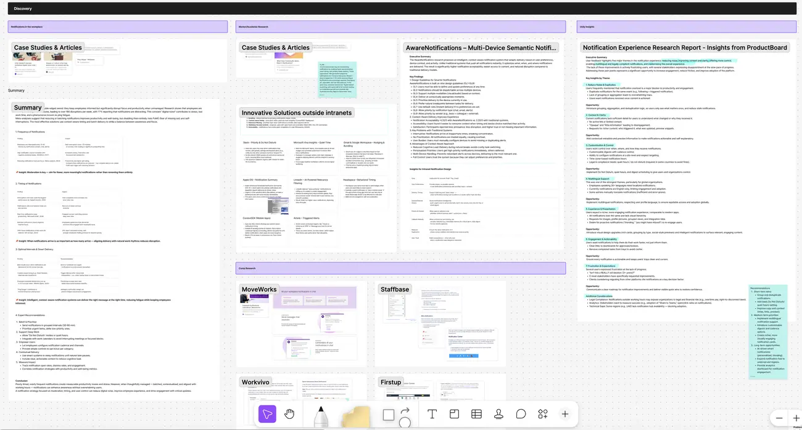
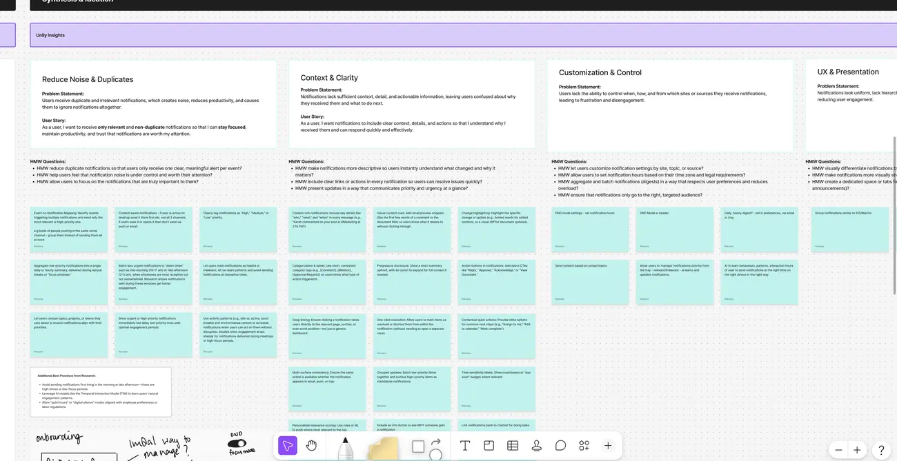
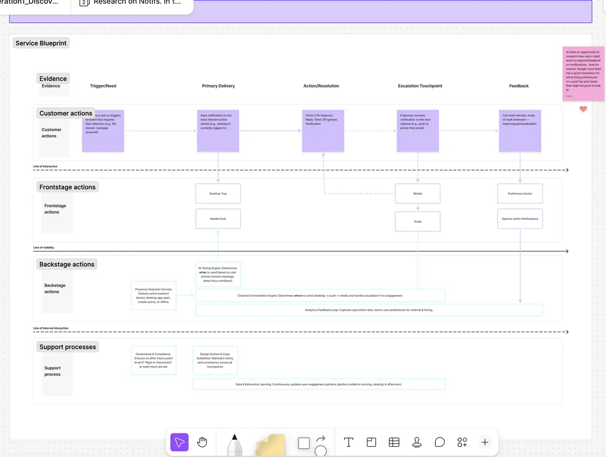
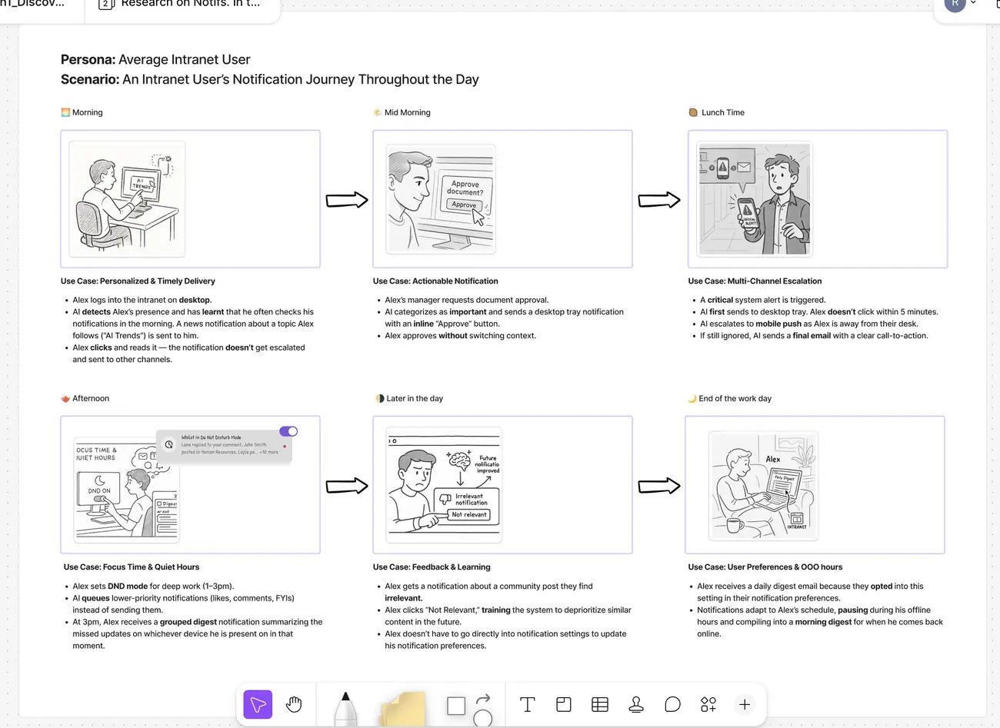
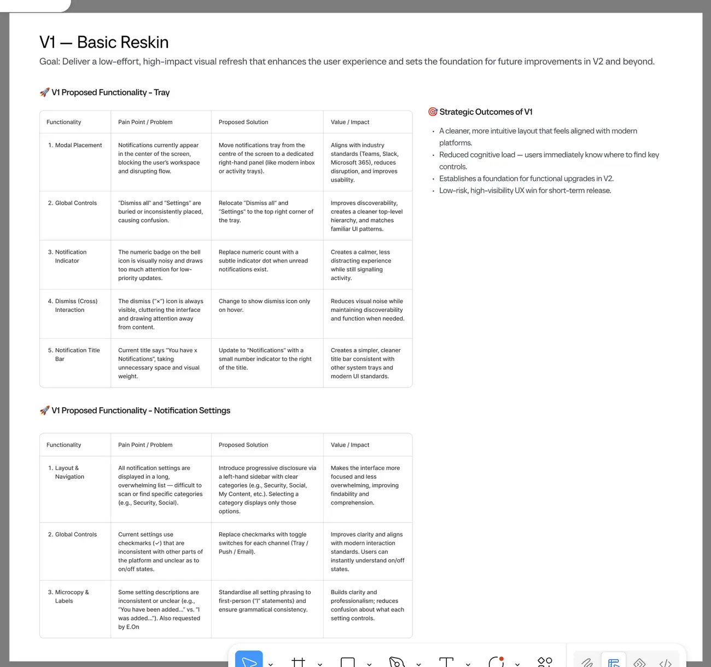
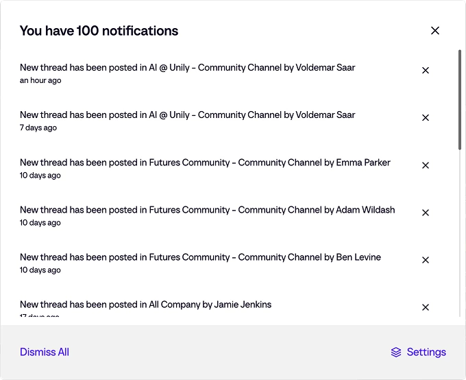
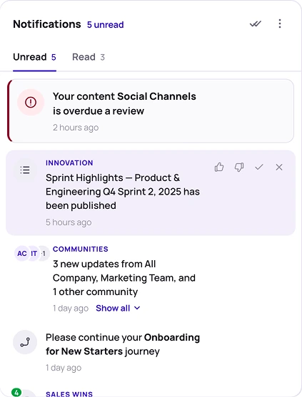
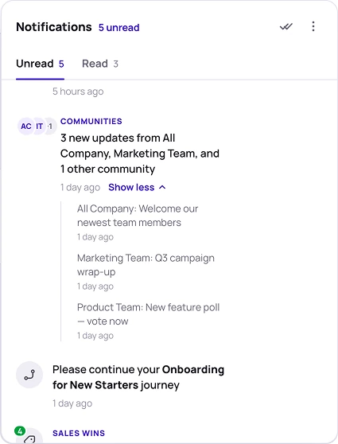
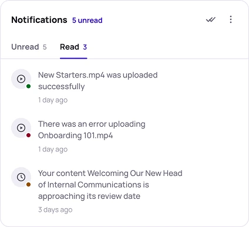
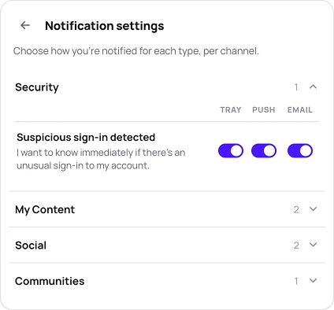

Unily · Case study · Flagship feature, end to end
What to ship first when everything is broken
A ground-up redesign of the platform’s notifications — from a flat tray nobody trusted to a context-aware system that decides what to send, when, and to which device. Sequenced across three releases.
✦ Impact
notification-related support tickets in the 8 weeks after V1, against the 8 before
of sessions ending in "dismiss all" once V1 sorting and grouping went live
problems resolved by one strategy, shipped as three sequenced releases
Users had been asking for this for three years. The research pointed at an ambitious system; the loudest complaints were about things that were simply broken. The real design problem was what to ship first.
A productivity tax nobody was measuring
Notifications keep employees informed, and unmanaged they systematically destroy the focus that makes the information useful. Employees are interrupted every 10 to 30 minutes — more than 160 disruptions a week — and 77% report finding notifications distracting. Each interruption costs roughly 23 minutes of recovery.
On our own platform it was worse than generic overload. Users couldn’t tell what a notification referred to or why they’d received it. Duplicates arrived for the same event. The tray didn’t refresh, so nobody trusted it. A security alert looked identical to a comment on a post. And everything arrived in English, on a platform serving organisations with employees speaking 26 or more languages.
Frustration & expectations
- “Isn’t this a REALLY old ideation (3+ years)?”
- C-level asking for it by name
- Clients cite it when they weigh up leaving
→ A visible roadmap, and quick wins.
Noise & duplicates
- Two notifications for one event
- No grouping — trays overwhelm
- Still there after you’ve actioned it
→ Group, dedupe, clear what’s done.
Control
- Digest cadence, site-level config
- Hours that follow your time zone
- Quiet hours: a legal requirement in some countries
→ Do not disturb, quiet hours, digests.
Clients evaluating whether to migrate away were citing notifications as a decision factor. This wasn’t only a design problem about interruption. It was a credibility problem about delivery.
Three streams that would each have given a different answer alone
- Academic work on interruption. Mid-task interruptions cause the largest performance hit, increasing both completion time and error rates. Real-time notifications reduce deep work. Batched hourly digests improve focus.
- Market and competitive analysis. Five patterns recurred outside the intranet category: bundling, context-aware timing, relevance filtering, wellbeing controls, and actionability from within the notification itself.
- Internal user and stakeholder research. Seven themes, the seventh of which was really about trust — frustration at the pace of progress.

Eight problems, and one that makes the others worse
Rather than carry seven research themes into design, I wrote eight problem statements, each with a user story and a set of How Might We questions — so the team was solving stated problems rather than reacting to feedback.
Problem 8 was notification settings themselves: so numerous that nobody ever personalised anything. It matters most because every fix for problems 1 through 7 is tempting to solve with another setting, and each new setting makes 8 worse. Naming it early is what stopped the design defaulting to configuration.
The reframe that changed the priority orderNotifications sent outside working hours carry real financial exposure in right-to-disconnect jurisdictions — so quiet hours weren’t a wellbeing nice-to-have but a compliance requirement with a business case attached. That is what got it prioritised.

A notification that chases you, rather than broadcasting at you
The core mechanic is a delivery ladder. It goes to the desktop tray first, if you’re there. Unopened, it escalates to mobile push. Still ignored and important enough, it becomes an email with a clear call to action.
That ladder is what makes moderation possible: because the system can escalate when something is genuinely urgent, it can afford to stay quiet about everything else.
Four services sit behind it, none visible to the user — a timing engine that learns engagement patterns and avoids meetings and deep focus, presence detection that identifies which device is actually in use, channel orchestration that handles escalation, and an analytics feedback loop that refines both over time.

A day in the life: settings, solved by never opening them
- Morning. Alex logs in on desktop. The system has learnt he checks notifications then, so a news item on a topic he follows arrives there. He reads it; it never escalates.
- Lunch. A critical system alert fires. Tray first. No click within five minutes, so it escalates to push. Still ignored, it becomes an email.
- Afternoon. He sets Do Not Disturb for deep work, one till three. Likes, comments and FYIs queue rather than send. At three he gets one grouped digest of what he missed, on whichever device he’s actually using.
- Later. A community post is irrelevant to him. He marks it “not relevant”, which trains the system to deprioritise similar content. He never opens settings — preference-setting becomes a by-product of use.

The visionary version would have meant another long silence
The research pointed at an ambitious system: context-aware timing, AI escalation, behavioural learning. Correct destination, long build. Meanwhile the loudest feedback was about things that were simply broken — a tray that didn’t refresh, confusing read states, a modal that blocked the workspace. Users had been raising those for three years.
So I split the strategy into three independently releasable parts:
Layout and placement. Move the tray from a centre-screen modal to a right-hand panel matching the pattern people know from Teams and Slack. No backend work, visible the day it ships.
Reliability and comprehension. Auto-refresh, consistent read states, bulk actions, context labels, error handling, accessibility and performance.
Intelligence. The timing engine, presence detection, orchestration, digests and multilingual delivery.
The argument made to stakeholders was that V1 buys back the credibility that makes V3 fundable. A low-risk, high-visibility release proves movement to an audience that had concluded there wouldn’t be any.

Deep dive
The tray, step by step
Before: a hundred undifferentiated rows ordered by nothing but age. After: a tray that sorts, groups and lets you act — walk through it.





Use the arrow keys or buttons to step through
What shipped, and what it’s judged on
This is a sequenced release rather than a finished product, and the numbers that matter aren’t all in yet. The measures worth tracking were set upfront: tray engagement and open rate, dismiss rate, settings-completion rate, and notification-related support ticket volume before and after.
The strongest qualitative signal available is probably a client one — notifications were being cited as a migration risk, so a changed client conversation is worth more here than an engagement percentage.
sessions where a notification is opened from the tray
"dismiss all" rate
settings completion, with smart defaults doing the rest
notification-related support tickets
V1 has been live for 8 weeks. V2 is in beta with 3 clients, and V3 is in design. Usability testing of the new tray with 8 participants lifted task success from 62% to 94%. V2 is scoped to WCAG 2.2 AA, checked with axe and a screen reader pass.
The same inbox, either side of the redesign
Reflection and learnings
The order you ship in is a design decision
The biggest lesson: when trust in delivery is gone, the most valuable first release is the one people can see — even if it’s the least ambitious.
What I got wrong
The research was extremely broad — three streams, eight problem statements. Worth asking whether that delayed a decision the user feedback alone could have supported earlier.
Accessibility landed in the Medium tier rather than V1 — the sequencing call I would most expect to be challenged on.
Multilingual support was one of the strongest themes in the research and still sits in V3 — the distance between what research surfaced and what the sequence could carry.
V3 depends on presence detection and behavioural learning that need real usage data to be any good. Was that dependency sized honestly at sign-off?
What happens next
V3 delivery — the timing engine, presence detection and the analytics loop that turn the ladder from a fixed rule into learned behaviour.
Multilingual notifications respecting user profile language — a direct blocker to adoption in global organisations.
Proactive discovery: trending and “you might have missed” digests, balanced against the overload this set out to reduce.
Measurement — open, click-through and dismiss rates, so the next iteration is tuned on evidence rather than feedback volume.
V1 buys back the credibility that makes V3 fundable.